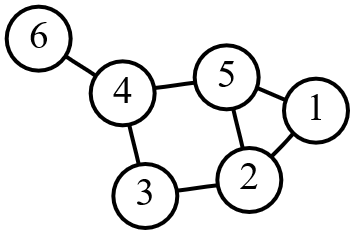

What are graphs and trees?
The graph is an abstract concept in mathematics. A graph is defined as two sets of objects. One of these sets is the node set, which contains all of the ‘nodes’ in the graph. Nodes are also called vertices, and can be thought of as the ‘things,’ in the graph. Some pairs of these nodes are related, or have some abstract relationship between them. This relationship is called an edge, which can be thought of as ‘connections’ between the ‘things’ in the graph. Edges compose the second set of objects in a graph, which is called the edge set. Typically, a graph is depicted in diagrammatic form as a set of dots for the nodes, joined by lines or curves between related nodes depicting the edges. Graphs are used to represent any objects with pair-wise relationships. A very famous example is Facebook, where every user’s profile is connected to a set of other user’s profiles. The profiles can be treated as nodes, and the ‘friend’ relation can be treated as an edge between two profiles.
Edges can be undirected, which describes a mutual relationship, or directed, in which case they would be describing one-way relationships. Directed edges are usually depicted as pointed arrows. The Facebook example above would be an undirected graph, as ‘friending’ is a two-way relationship. Conversely, someone can be ‘following’ someone else on twitter, without reciprocation. This would describe a directed relationship, and the twitter network would have directed edges.
In computer science, graphs are used as a logical fundamental data structure. They are used to define relationships between variables, programs, bits of data, etc. There are many different forms that a graph problem can take. They can range in difficulty from finding a path on a 2D grid, to efficiently searching through web links to find a site, to deciding how the elements in a huge program should run, to analyzing information flow based on connections on twitter, to a model of the economy based on social networks, and to a simulation of all connected neurons in the human brain, all depending on the nature of the graph and what it is meant to represent. At heart, all of these tasks feature a set of objects and a set of relationships between those objects, and so they all must begin with an understanding of graphs.

A graph with 6 vertices and 7 edges
A Tree is a special case of a graph. Trees are directed graphs, meaning they have only directed edges, which have no cycle. What this means is that if you start at any node in the tree, and move only along edges in the direction they point, you will not be able to revisit any nodes. A tree always has a root node, or first node, and potentially many levels of additional nodes that form a hierarchy.